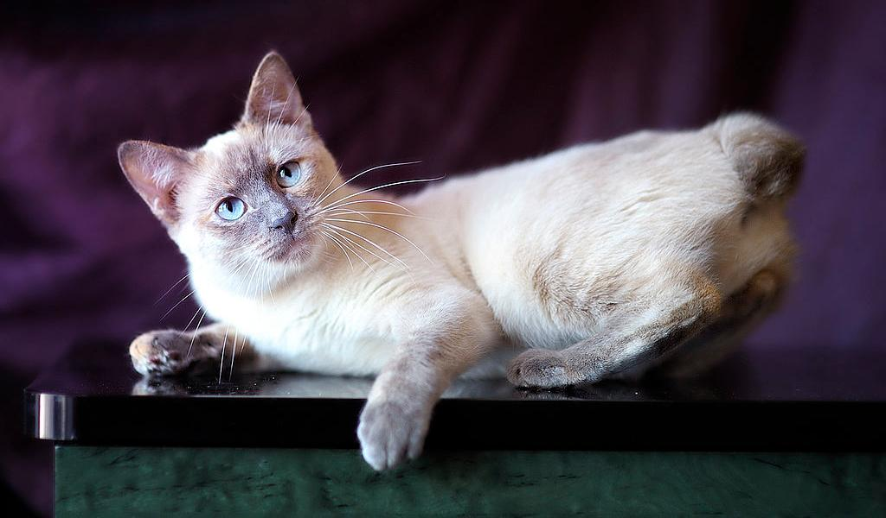
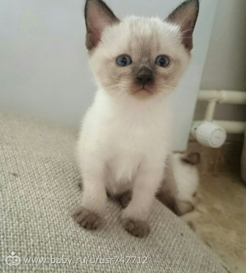

Меконгский бобтейл

Меконгский бобтейл – аборигенная порода кошек из Юго-Восточной Азии. Питомец отличается спокойным ласковым нравом и преданностью.
Основные моменты
- Меконгские бобтейлы уравновешенные, очень общительные и умные кошки, способные стать идеальными компаньонами.
- Порода имеет ряд «собачьих» повадок, что привлекает многих покупателей.
- Кошка привязывается к хозяевам, любит общение и тактильный контакт.
- Представители породы прекрасно ладят с малышами и не проявляют агрессии, поэтому подходят для семей с детьми
История породы меконгский бобтейл
Родиной меконгских бобтейлов стала Юго-Восточная Азия. Порода получила название в честь реки Меконг, протекающей на территории Таиланда, Мьянмы, Камбоджи, Лаоса, Вьетнама. Слово «бобтейл» обозначает наличие короткого хвоста. Изначально кошек именовали сиамскими, затем тайскими, и только в 2003 году назвали меконгскими, чтобы избежать путаницы с другими породами. Одно из первых описаний этих кошек принадлежало Чарльзу Дарвину, упомянувшему их в 1883 году в труде «Изменение домашних животных и культурных растений».
На родине порода считалась королевской. Тайские бобтейлы жили на территории храмов и дворцов. Длительное время, оберегая породу, тайцы запрещали вывоз кошек. Меконгские бобтейлы покидали страну крайне редко и только в качестве особенно ценных подарков. В числе получателей были Николай II, британский посол Оуэн Гоулд и Анна Кроуфорд – гувернантка детей сиамского короля. В Европу порода попала в 1884 году, в Америку – в 1890-х.
Длительное время порода оставалась незамеченной, считаясь разновидностью сиамской кошки. По этой причине разведение длительное время велось по пути выбраковки особей с короткими заломленными хвостами. Эта черта не потерялась только благодаря отдельным поклонникам тайских бобтейлов. Позже профессиональные фелинологи отметили существенную разницу в телосложении, постановке ушей, не говоря о коротких от природы хвостах.
Как выбрать котенка
В некоторых городах нашей страны зарегистрированы питомники, которые занимаются разведением породы. Как правило, кошки стоят дороже котов. На стоимость котенка также влияет насыщенность котенка и его параметры. Покупая питомца у надежных заводчиков, вы получите здорового питомца. Поэтому изучайте отзывы. Вам предоставят все документы на прививки и родословную. Малыш должен быть в меру упитанным, активным и подвижным
